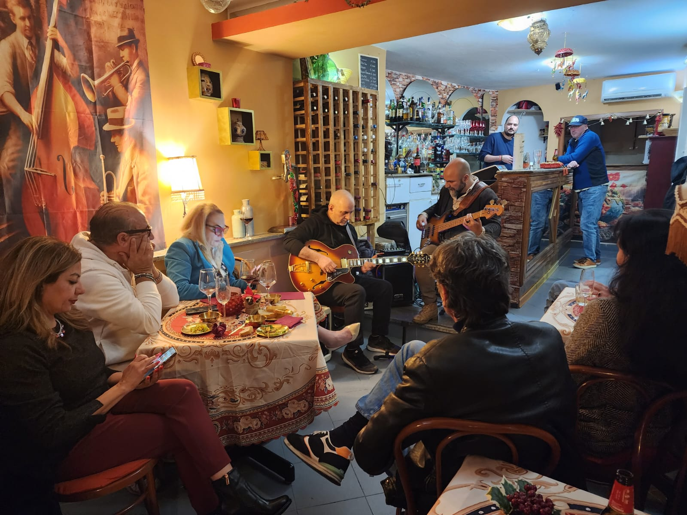
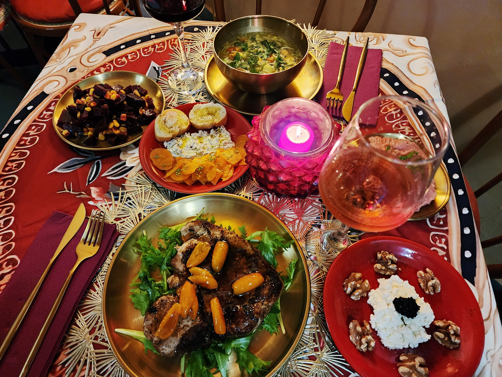
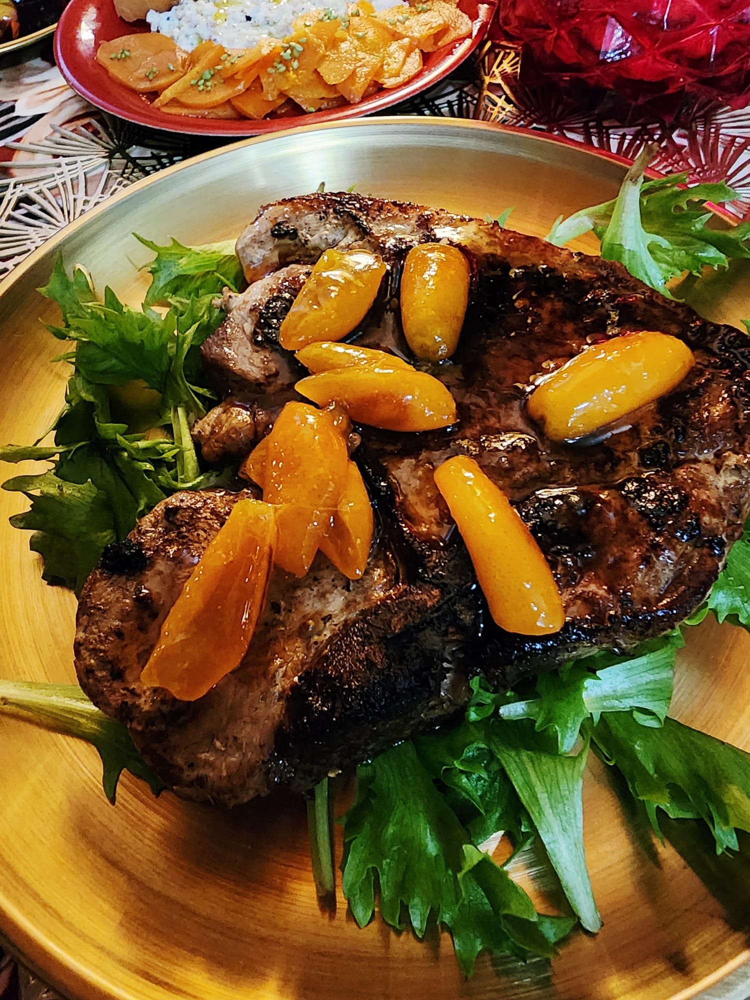
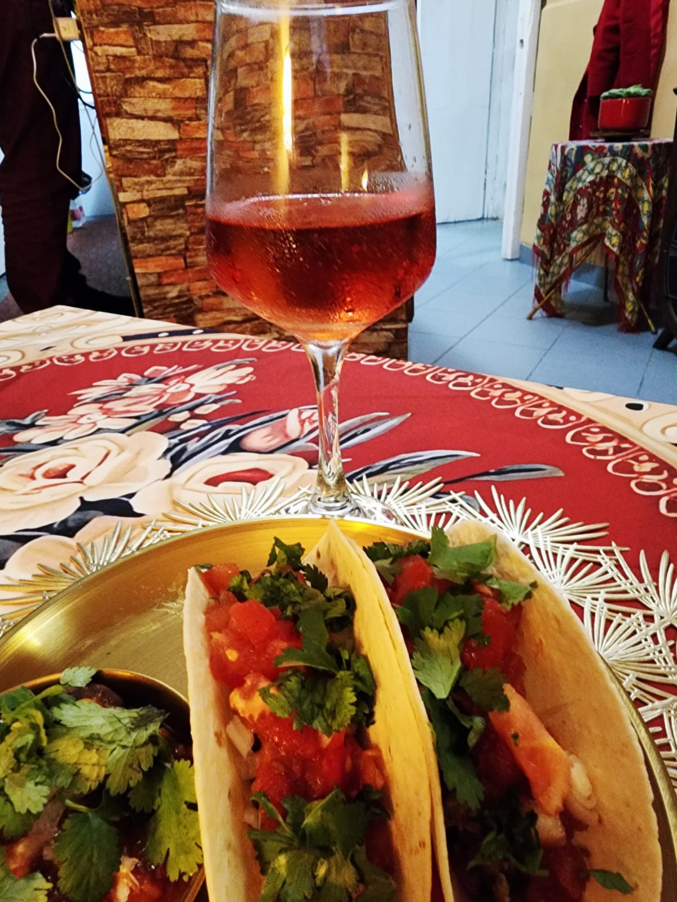
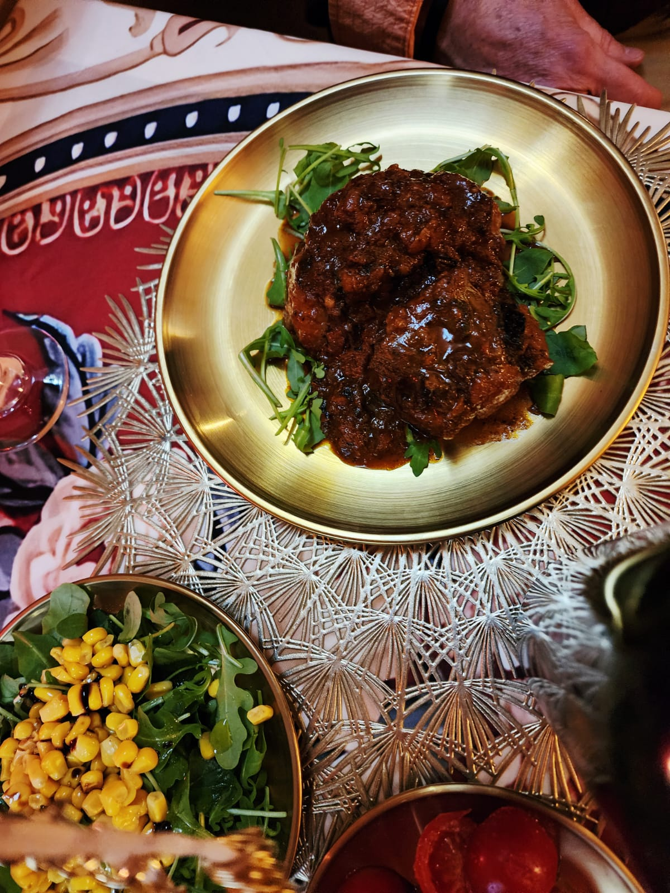
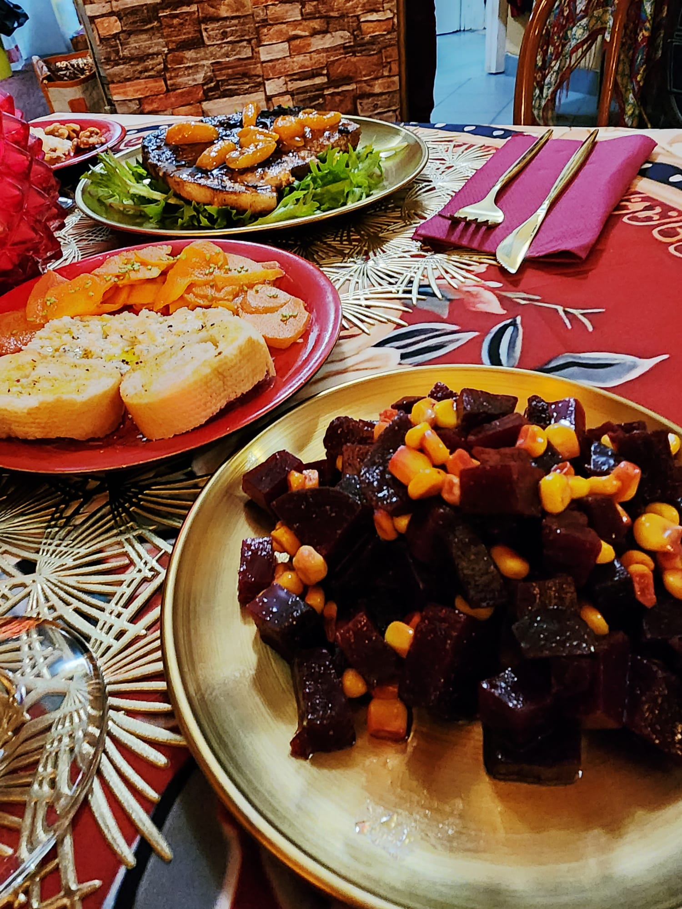
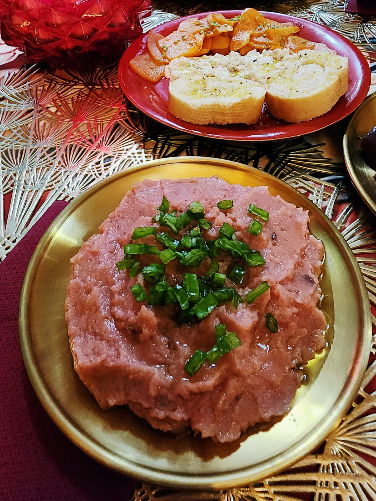

Ogni sera una cucina diversa · Ogni sera un'esperienza
Libanese, marocchina, messicana, brasiliana. Hugo e Wilma trasformano ogni serata in un viaggio culinario unico. Con musica dal vivo e vini selezionati.

Il locale
Nel borgo medievale di Santa Domenica Talao, Hugo e Wilma hanno creato qualcosa di unico. Ogni sera una cucina diversa — libanese, marocchina, messicana, brasiliana — preparata con ingredienti freschi e autentica passione. La musica dal vivo completa un'esperienza che non si dimentica.

Seguite i nostri social per scoprire la cucina di stasera. Ogni serata è diversa, ogni piatto racconta una storia che viene da lontano.
Fotografie




Ogni sera è speciale
Vieni a trovarci
I posti sono limitati — prenotare è consigliato. Hugo e Wilma vi aspettano questa sera.
Vi risponderemo a breve per confermare